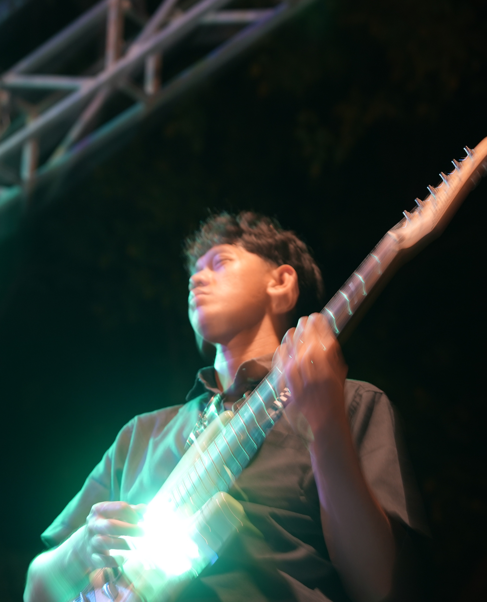

📎 Files & media
≡ Description

Orchestral Arranger, Guitarist, Music ProducerAn orchestral arranger, guitarist, and music producer based in Surabaya, Indonesia. I specialize in creating rich, expressive arrangements from sweeping string sections and full orchestral scores to contemporary pop and cinematic productions.
My work spans multiple genres and approaches: re-composing classical masterpieces, arranging modern pop songs with orchestral depth, and producing original music released independently. One of my originals, In Another Lifetime, is now available on Spotify featuring a full orchestral arrangement built entirely from scratch.
Here are some projects I have worked on!